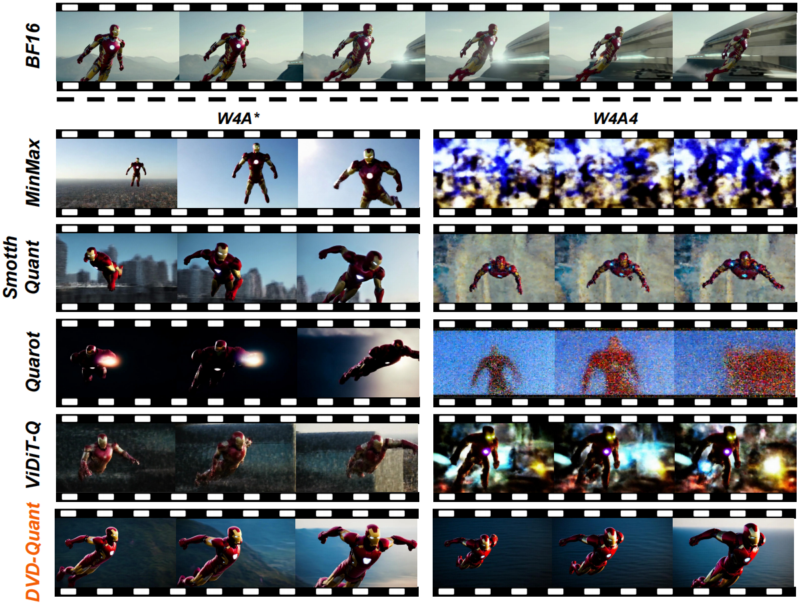

|
Publications
(* denotes equal contribution, † denotes corresponding author)
|
 |
DVD-Quant: Data-free Video Diffusion Transformers Quantization
Zhiteng Li*, Hanxuan Li*, Junyi Wu, Kai Liu, Linghe Kong, Guihai Chen, Yulun Zhang, Xiaokang Yang
ICLR 2026
tl;dr: We develop the first data-free quantization framework that achieves W4A4 PTQ for Video DiTs with 2× speedup while maintaining visual fidelity.
|
|